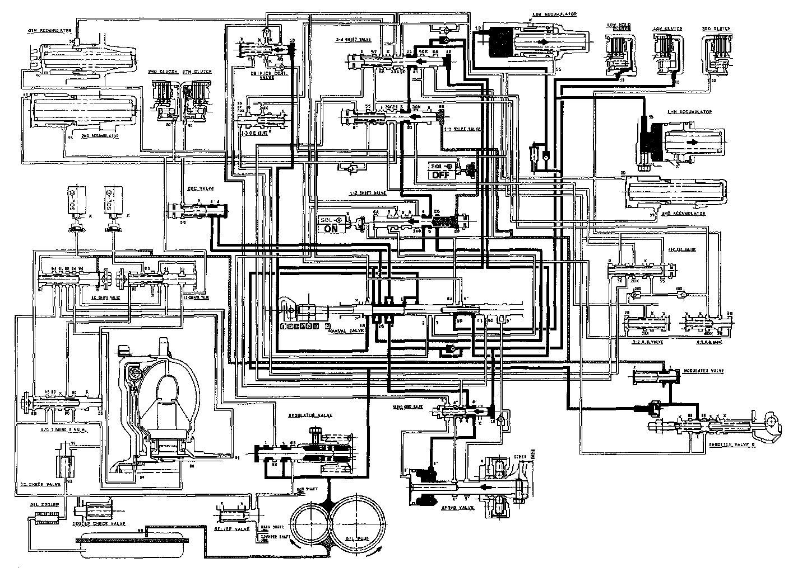

[1] Position

[1] POSITION
The line pressure (1) becomes line pressure (4) at the manual valve and passes to the 1St clutch and 1St accumulator. Then line pressure (4) flows through the 1st-hold clutch and 1st-hold accumulator.
Fluid flows by way of:
Line Pressure (4) 1-2 Shift Valve 2-3 Shift Valve - 3rd Clutch Pressure (31) 3-4 Shift Valve - 4th Clutch Pressure (41) Manual Valve - 1st-hold Clutch Pressure (15) 1st-hold Clutch
The modulator pressure (6) is supplied to the 1-2 and 2-3 shift valves. The line pressure (1) also flows to throttle valve B.
NOTE:
- When used, "left" or "right" indicates direction on the flowchart.
- SOL - (A): Shift Control Solenoid Valve A
- SOL - (B): Shift Control Solenoid Valve B
- SOL - (C): Lock-up Control Solenoid Valve A
- SOL - (D): Lock-up Control Solenoid Valve B